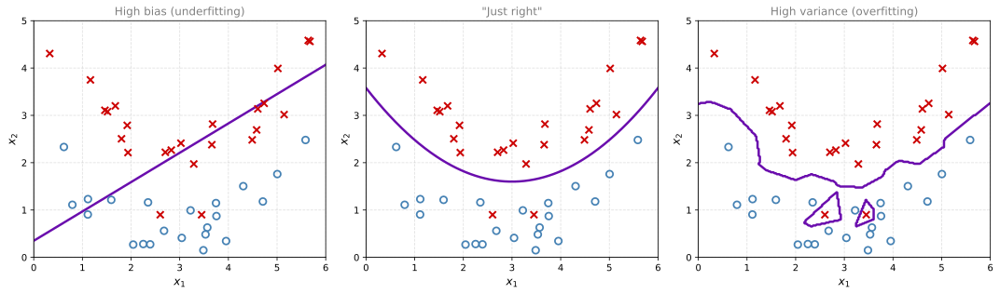
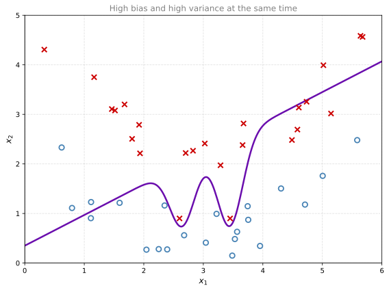

Setting Up Your Machine Learning Application
deep-learning
bias-variance
hyperparameters
How to split data into train, dev, and test sets, diagnose bias and variance from error rates, and apply the basic recipe for machine learning.
By now you have learned how to implement a neural network, all the way up to the deep networks of the previous course. This course is about the practical aspects of making your neural network work well, ranging from hyperparameter tuning, to how to set up your data, to how to make sure your optimization algorithm runs quickly so that your learning algorithm learns in a reasonable amount of time. This first part covers how to set up your machine learning problem, then regularization, then some tricks for making sure your neural network implementation is correct.
Train, Dev, and Test Sets
Making good choices in how you set up your training, development, and test sets can make a huge difference in how quickly you find a good high-performance neural network.
Applied Machine Learning is Iterative
When training a neural network, you have to make a lot of decisions. How many layers will the network have? How many hidden units should each layer have? What is the learning rate? What activation functions should the different layers use? When you start on a new application, it is almost impossible to correctly guess the right values for all of these hyperparameter choices on the first attempt. In practice, applied machine learning is a highly iterative process. You start with an idea, such as a network with a certain number of layers and hidden units. You code it up and run an experiment, which tells you how well that particular configuration works. Based on the outcome, you refine your ideas, change your choices, and keep iterating to find a better and better network.
Deep learning has found great success in many areas, from natural language processing, to computer vision, to speech recognition, to many applications on structured data. Structured data includes everything from advertisements, to web search (not just internet search engines but also shopping websites and any website that wants to return great results when you type into a search bar), to computer security, to logistics such as figuring out where to send drivers to pick things up and drop them off. Interestingly, intuitions from one domain often do not transfer to another. A researcher with years of experience in NLP who tries a computer vision problem, or a speech recognition expert who jumps into advertising, usually cannot carry their hyperparameter intuitions over. The best choices depend on the amount of data you have, the number of input features, whether you are training on GPUs or CPUs, the exact configuration of those GPUs or CPUs, and many other things. Even very experienced deep learning practitioners find it almost impossible to guess the best hyperparameters correctly the very first time.
So applied deep learning is a cycle of idea, code, and experiment that you go around many times. One of the things that determines how quickly you make progress is how efficiently you can go around this cycle, and setting up your data sets well makes you much more efficient at it.
Three Sets and Their Jobs
Take all the data you have and picture it as one big box. Traditionally, you carve off one portion to be the training set, another portion to be the hold-out cross validation set, which is also called the development set (for brevity, the dev set), and a final portion to be the test set. You already met this three-way split in the Advanced Learning Algorithms course.
The workflow is as follows. You keep training algorithms on the training set. You use the dev set to see which of many different models performs best. After doing this long enough, when you have a final model you want to evaluate, you take the best model you found and evaluate it on the test set, which gives you an unbiased estimate of how well the algorithm is doing.
How Big Should Each Set Be?
In the previous era of machine learning, it was common practice to split all your data 70/30 into train and test sets (if you did not have an explicit dev set), or 60/20/20 into train, dev, and test sets. This was widely considered best practice, and with 100, 1,000, or 10,000 examples in total, these ratios were perfectly reasonable rules of thumb.
In the modern big data era, the trend is that the dev and test sets have become a much smaller percentage of the total. The goal of the dev set is only to let you evaluate, say, two or ten different algorithm choices and quickly decide which one is doing better. You might not need 20% of your data for that. Similarly, the main goal of the test set is to give you a confident estimate of how well your final classifier is doing, and you may not need 20% of your data for that either. With 1,000,000 training examples, 10,000 examples may be more than enough for the dev set and 10,000 more than enough for the test set. Since 10,000 is 1% of 1,000,000, the split becomes 98% train, 1% dev, 1% test. For applications with even more data, splits like 99.5% train, 0.25% dev, 0.25% test, or 99.5% train, 0.4% dev, 0.1% test also appear.

To recap, with a relatively small dataset the traditional ratios are okay. With a much larger dataset, it is also fine to make the dev and test sets much smaller than 20% or even 10% of the data. More specific guidelines on dev and test set sizes come later in the specialization.
Mismatched Train and Test Distributions
One other trend in the era of modern deep learning is that more and more people train on mismatched train and test distributions. Say you are building an app that lets users upload pictures, and your goal is to find the cat pictures and show them to your users (who are all cat lovers). Your training set might be cat pictures downloaded off the internet, while your dev and test sets are pictures uploaded by users through the app. Many webpages have high resolution, professional, nicely framed cat pictures, but your users upload blurrier, lower resolution images taken casually with a cell phone camera. So these two distributions of data may be different.
The rule of thumb to follow in this case is to make sure the dev and test sets come from the same distribution. Because you use the dev set to evaluate many different models and try really hard to improve performance on it, it is nice if the dev set comes from the same distribution as the test set that renders the final verdict. At the same time, deep learning algorithms have a huge hunger for training data, so teams use all sorts of creative tactics, such as crawling webpages, to acquire a much bigger training set, even at the cost of the training set coming from a different distribution than the dev and test sets. As long as the dev and test sets match each other, progress in your machine learning algorithm will be faster. A more detailed explanation of this rule of thumb comes later in the specialization.
Not Having a Test Set Might Be Okay
Remember that the goal of the test set is to give an unbiased estimate of the performance of the final network you selected. If you do not need that unbiased estimate, it might be okay to not have a test set. In that case, you train on the training set, try different model architectures, evaluate them on the dev set, and use that to iterate toward a good model. Because you fit your model choices to the dev set, the dev set performance no longer gives an unbiased estimate of performance, but if you do not need one, that might be perfectly fine.
A note on terminology. When a team has just a train set and a dev set with no separate test set, most people call the dev set the “test set”, so the team says they have a train/test split. What they actually do is use that “test set” as a hold-out cross validation set, which is not a great use of terminology, because they are then overfitting to the so-called test set. When a team tells you they have only a train and a test set, be cautious and ask whether it is really a train and dev set. Calling it a train and development set would be more correct terminology, and this practice is actually okay if you do not need a completely unbiased estimate of the performance of your algorithm.
Having set up train, dev, and test sets well lets you iterate more quickly. It also lets you measure the bias and variance of your algorithm more efficiently, so you can select ways to improve it more efficiently. That is the subject of the next section.
Review Questions
1. What is the job of each of the three sets in the train / dev / test split?
TipAnswer
The training set is what you train your algorithms on. The dev set (hold-out cross validation set) is where you compare many different models or hyperparameter choices to see which performs best. The test set is used once, on the final model, to get an unbiased estimate of how well the algorithm is doing.
1. Your team has 1,000,000 labeled examples. Which split is most in line with modern deep learning practice?
60% train, 20% dev, 20% test
70% train, 30% test
98% train, 1% dev, 1% test
33% train, 33% dev, 33% test
TipAnswer
c. The dev set only needs to be big enough to compare a handful of algorithm choices, and the test set only needs to be big enough to give a confident estimate of final performance. With 1,000,000 examples, 10,000 examples (1%) is plenty for each, leaving 98% for training. The 60/20/20 and 70/30 ratios were reasonable in the previous era of machine learning with datasets of roughly 100 to 10,000 examples.
1. Your training set is high resolution cat pictures crawled from the web, while your users upload blurry cell phone pictures. Which rule of thumb should you follow when forming the dev and test sets?
TipAnswer
Make sure the dev and test sets come from the same distribution, in this case both from user-uploaded app pictures. You will spend a long time tuning models to do well on the dev set, so the dev set should represent the same distribution the test set (and your users) will judge you on. Meanwhile it is acceptable for the much bigger training set to come from a different distribution, such as web-crawled images, because deep learning is data hungry and the extra data speeds up progress.
1. A team tells you they train on a training set and tune their model choices on their “test set”. What is that set really, and what is the caveat?
TipAnswer
It is really a dev set (hold-out cross validation set), because they evaluate many models on it and iterate against it. By fitting model choices to that set, they are overfitting to it, so it no longer provides an unbiased estimate of performance. That is acceptable practice if no unbiased estimate is needed, but calling it a train and development set would be more correct terminology.
1. If you have 10,000 examples, how would you split the train/dev/test set?
60% train, 20% dev, 20% test
33% train, 33% dev, 33% test
98% train, 1% dev, 1% test
TipAnswer
a. With 10,000 examples you are in the small data regime, not big data, so the classical split applies. The 98/1/1 style of split makes sense in the big data era with millions of examples, where 1% is still 10,000 examples, plenty for evaluating models.
1. To build a cat detector, 500,000 pictures taken by cat owners are used to make the training, dev, and test sets. To increase the size of the test set, 10,000 new images taken from security cameras are added to the test set. Which of the following is true?
This will increase the bias of the model, so the new images should not be used
This will be harmful to the project, since the dev and test sets now have different distributions
This will reduce the bias of the model and help improve it
TipAnswer
b. The quality and type of security camera images are quite different from pictures taken by owners, so after the change the dev and test sets can no longer be considered as coming from the same distribution. That breaks the rule of thumb from this section. You spend a long time tuning against the dev set, so the test set would then judge the model on a target it was never aimed at.
Bias and Variance
Almost all really good machine learning practitioners have a very sophisticated understanding of bias and variance. It is one of those concepts that is easy to learn but difficult to master. Even if you have seen the basic ideas before (for example on the bias and variance page of the machine learning course), there is often more nuance than you would expect. One trend of the deep learning era is that there is less discussion of the bias-variance trade-off. We still talk about bias, and we still talk about variance, but we talk less about a trade-off between them. You will see why at the end of this page.
Seeing Bias and Variance in Two Dimensions
Say you have a two-dimensional dataset with features \(x_1\) and \(x_2\). If you fit a straight line to the data, say a logistic regression fit, the line is not a very good fit, so this classifier has high bias. We also say it is underfitting the data. On the opposite end, if you fit an incredibly complex classifier, perhaps a deep neural network with a lot of hidden units, you can fit the data perfectly, but that does not look like a great fit either. That classifier has high variance and is overfitting the data. Somewhere in between there is a classifier with a medium level of complexity that fits a reasonable-looking curve. That one is “just right”.

The straight line on the left misses the curved shape of the boundary, the middle curve fits the data reasonably while ignoring the two odd red points in the blue region, and the classifier on the right contorts itself to classify every single point correctly, including those two points, which are probably mislabeled outliers.
Diagnosing Bias and Variance from Error Rates
In a 2D example with just two features you can plot the data and visualize bias and variance directly. In high dimensional problems you cannot plot the data and visualize the decision boundary. Instead, there are two key numbers to look at, the training set error and the dev set error.
Continue the example of cat picture classification, where a cat photo is a positive example and a non-cat photo is a negative example, and suppose that people can recognize cats nearly perfectly, so human error is roughly 0%. Consider four scenarios.
| Training set error | Dev set error | Diagnosis |
|---|---|---|
| 1% | 11% | High variance |
| 15% | 16% | High bias |
| 15% | 30% | High bias and high variance |
| 0.5% | 1% | Low bias and low variance |
In the first row, you do very well on the training set but relatively poorly on the dev set, so it looks like you overfit the training set and are not generalizing well to the hold-out data. That is high variance. In the second row, the algorithm is not even doing well on the training set, so it is underfitting the data. That is high bias. Notice though that it generalizes reasonably, since dev performance is only 1% worse than training performance. In the third row, the algorithm does poorly on the training set (high bias) and then does even worse on the dev set (high variance on top of it), which is really the worst of both worlds. In the last row, with 0.5% training error and 1% dev error, users are probably quite happy with a cat classifier at 1% error, and you have low bias and low variance.
The takeaway is this. Looking at the training set error tells you how well you fit the training data, which tells you whether you have a bias problem. Looking at how much higher the error goes when you move from the training set to the dev set tells you how bad the variance problem is, in other words how well you generalize from the training set to the dev set.
NoteTwo Assumptions Behind This Analysis
This analysis is predicated on the assumption that human level performance is nearly 0% error, or more generally that the optimal error, sometimes called Bayes error, is nearly 0%. If the Bayes error were much higher, say 15% (for example with images so blurry that even a human could not classify them well), then 15% training error would be perfectly reasonable, and the second row above would count as low bias and pretty low variance. The analysis also assumes the train and dev sets are drawn from the same distribution. When these assumptions are violated there is a more sophisticated analysis, covered later in the specialization.
What High Bias and High Variance Looks Like Together
You have seen high bias (the underfit line) and high variance (the overfit squiggle), and you have a sense of what a good classifier looks like. What does high bias and high variance look like? It is kind of the worst of both worlds.
The purple classifier above is mostly linear, so it has high bias, because it underfits the data that really needed a curved, quadratic-like boundary. But it also has too much flexibility in the middle, where it bends around to capture the two probably-mislabeled outlier examples, so it overfits those two points and has high variance as well. This example is admittedly a little contrived in two dimensions, but with very high dimensional inputs you really do get classifiers with high bias in some regions and high variance in other regions, and there it seems much less contrived.
To summarize, by looking at your algorithm’s error on the training set and on the dev set, you can diagnose whether it has a problem of high bias, high variance, both, or neither. Depending on the diagnosis, there are different things to try, which leads to the basic recipe below.
Review Questions
1. Your cat classifier gets 1% training set error and 11% dev set error. Humans classify these pictures nearly perfectly. What is the diagnosis?
High bias
High variance
High bias and high variance
Low bias and low variance
TipAnswer
b. The algorithm fits the training set very well (1% error, close to human performance), so bias is low. But the error jumps by 10 percentage points on the dev set, which means it is not generalizing well from the training set to the hold-out data. It has overfit the training set, which is high variance.
1. Your classifier gets 15% training set error and 16% dev set error, and humans achieve roughly 0% error on this task. What is the diagnosis, and what single change to the assumptions would flip it?
TipAnswer
With human (and therefore roughly Bayes) error near 0%, the algorithm is not even fitting the training set well, so it has high bias. It generalizes fine, since the dev error is only 1% higher, so variance is low. However, if the Bayes error were much higher, say 15% (for example with hopelessly blurry images), then 15% training error would be perfectly reasonable and the same numbers would indicate low bias and low variance.
1. Which two numbers do you look at to diagnose bias and variance in a high dimensional problem, and what does each one tell you?
TipAnswer
The training set error and the dev set error. The training set error tells you how well you fit the training data, which reveals a bias problem. The gap between training error and dev error (how much worse the algorithm does on held-out data) tells you how bad the variance problem is. This works when the Bayes error is small and the train and dev sets come from the same distribution.
1. How can a single classifier have both high bias and high variance?
TipAnswer
By underfitting the overall shape of the data in most regions while overfitting individual points in others. In the 2D example, a mostly linear boundary underfits the quadratic-like shape of the true boundary (high bias), yet a flexible bend in the middle wraps around two mislabeled outliers (high variance). With very high dimensional inputs, classifiers really can have high bias in some regions and high variance in other regions.
1. Your classifier for bananas and oranges gets a training set error of 0.1% and a dev set error of 11%. Which of the following statements are true? (Check all that apply.)
The model is overfitting the training set
The model has high variance
The model has a very high bias
The model is overfitting the dev set
TipAnswer
a and b. A training error of 0.1% means the model fits the training data almost perfectly, so bias is low, not high. The large gap between 0.1% and 11% is the hallmark of high variance, which is the same diagnosis as overfitting the training set. The dev set is not being overfit; the model simply fails to generalize to it.
Basic Recipe for Machine Learning
Knowing how to read training error and dev error lets you improve your algorithm much more systematically, using what is called a basic recipe for machine learning.
You already met this loop on the bias and variance page of the machine learning course. In the terminology of this course, the cross-validation set in the diagram is the dev set, so \(J_{train}\) is the training set error and \(J_{cv}\) is the dev set error.
First Question, High Bias?
After training an initial model, first ask whether the algorithm has high bias. To evaluate that, look at the training set performance. If it is not even fitting the training set well, some things to try are
- a bigger network, with more hidden layers or more hidden units,
- training longer, or trying more advanced optimization algorithms (covered later in this course),
- finding a different neural network architecture better suited to the problem. This one goes in parentheses, because it is something you just have to try. Maybe you can make it work, maybe not.
Getting a bigger network almost always helps with bias. Training longer does not always help, but it certainly never hurts. Keep trying these things until you can at least fit the training set pretty well. Usually, if you have a big enough network, you should be able to fit the training data well, as long as the problem is one that is possible to solve. If the images are hopelessly blurry, fitting them may be impossible, but if a human can do well on the task, so that Bayes error is not too high, then training a big enough network should let you do well at least on the training set.
Second Question, High Variance?
Once bias is reduced to acceptable amounts, ask whether you have a variance problem. To evaluate that, look at the dev set performance. Can you generalize from a pretty good training set performance to a pretty good dev set performance? If you have high variance, some things to try are
- more data, which is the best way to solve a high variance problem when you can get it. It can only help. Sometimes, though, you simply cannot get more data.
- regularization, covered in the next section, to reduce overfitting.
- a different neural network architecture, which again you sometimes just have to try. A more appropriate architecture can reduce the variance problem, as well as the bias problem, though it is hard to be totally systematic about it.
Keep going around the loop, retraining and re-checking, until you find something with both low bias and low variance, whereupon you are done.
Two Points to Notice
First, depending on whether you have high bias or high variance, the set of things you should try can be quite different. Use the training and dev error to diagnose which problem you have, then select the appropriate subset of things to try. For example, if you actually have a high bias problem, getting more training data is not going to help, or at least it is not the most efficient thing to do. Being clear on how much of a bias problem and how much of a variance problem you have helps you focus on the most useful things to try.
Second, in the earlier era of machine learning there used to be a lot of discussion about the bias-variance trade-off, because most of the things you could try would increase bias while reducing variance, or reduce bias while increasing variance. There were not many tools that reduced only one of them without hurting the other. In the modern deep learning, big data era, as long as you can keep training a bigger network and keep getting more data (which is not always the case, but often is), a bigger network almost always reduces bias without necessarily hurting variance, as long as you regularize appropriately, and more data pretty much always reduces variance without hurting bias much. With these two tools you can drive down bias alone, or drive down variance alone, without really hurting the other. This is one of the big reasons deep learning has been so useful for supervised learning. There is much less of a trade-off to carefully balance, and more options for reducing bias or variance without increasing the other one. And as long as you regularize, training a bigger network almost never hurts; the main cost of a network that is too big is just computational time.
One of the remedies mentioned several times above is regularization, a very useful technique for reducing variance. There is a little bit of a bias-variance trade-off when you use regularization, since it might increase bias slightly, though often not much if the network is big enough. Regularization is the subject of the next section.
Review Questions
1. Your algorithm has high bias. Is collecting more training data a good next step?
TipAnswer
No. More data mostly helps with variance, not bias. If the algorithm is not even fitting the training set it already has, adding more examples is not the most efficient thing to do. Better options for high bias are a bigger network (more layers or hidden units), training longer or with better optimization algorithms, or possibly a different architecture.
1. In the basic recipe, which performance number do you check to detect high bias, and which to detect high variance?
TipAnswer
High bias is evaluated on the training set performance (is the model even fitting the data it trains on?). High variance is evaluated on the dev set performance (does the good training performance generalize to held-out data?). The diagnosis then determines which subset of remedies to try.
1. Why is there less talk of a bias-variance trade-off in the deep learning era?
TipAnswer
In the pre-deep-learning era, most available tools reduced bias at the cost of variance or vice versa. Today, training a bigger network almost always reduces bias without necessarily hurting variance (as long as you regularize appropriately), and getting more data pretty much always reduces variance without hurting bias much. These two tools let you drive down either one independently, so there is much less of a trade-off to balance, which is a big reason deep learning works so well for supervised learning.
1. Your neural network seems to have high variance. Which of the following would be promising things to try? (Check all that apply.)
Increase the number of units in each hidden layer
Get more training data
Get more test data
Make the neural network deeper
Add regularization
TipAnswer
b and e. More training data and regularization are the main variance-reduction tools in the recipe. A bigger or deeper network (a and d) is the remedy for high bias and would, if anything, make overfitting easier. More test data (c) changes how well you measure performance, not how well the model generalizes.